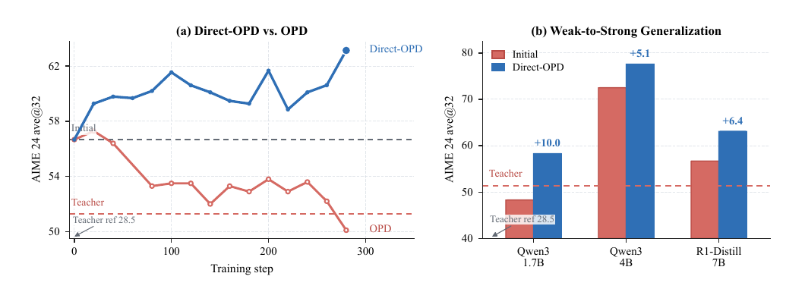

Direct-OPD: Weak-to-Strong Generalization by Distilling the RL Policy Shift
Paper: "Weak-to-Strong Generalization via Direct On-Policy Distillation" (arXiv 2607.05394v2, Jul 2026). Authors: Shiyuan Feng, Huan-ang Gao, Haohan Chi, Hanlin Wu, Zhilong Zhang, Zheng Jiang, Bingxiang He, Wei-Ying Ma, Ya-Qin Zhang, Hao Zhou — SIA-Lab of Tsinghua AIR & ByteDance Seed, Tsinghua, Peking University. Surfaced via the Hugging Face journal club (Lewis Tunstall).
TL;DR
- RLVR on every new strong model is a bottleneck: the target model must generate all the rollouts. Direct-OPD runs RL where it's cheap — on a small model — and transfers the policy shift \(\Delta_T = \log \pi_T - \log \pi_{T_{\text{ref}}}\) between the small model's post-RL and pre-RL checkpoints, not the small model's final policy.
- By the DPO identity, that log-ratio is the teacher's implicit reward (up to scale and a per-prompt constant). Evaluated on the stronger student's own rollouts, it becomes a dense per-token reward: KL-regularized RL on the student without a reward model, a verifier, or sparse-reward rollouts at target scale.
- A 1.5B teacher pair lifts Qwen3-1.7B 48.3 → 58.3 on AIME 2024 in ~4 hours on 8 A100s (Polaris needed 32 A100s for a week+ of direct RL for comparable movement), improves students that already beat the teacher (Qwen3-4B 72.5 → 77.6, R1-Distill-7B 56.7 → 63.1), and composes: applying a second, independent policy shift pushes 58.3 → 63.8.
Why this matters
Vanilla on-policy distillation has a hard precondition: the teacher must be at least as good as the student, because the student is trained to match the teacher's absolute distribution. That makes OPD useless exactly where post-training is most expensive — at the top of the model stack, where no better teacher exists and every RLVR run means weeks of large-model rollouts. Figure 1(a) below is the cleanest illustration of the failure I've seen: R1-Distill-7B starts at 56.7 on AIME, above the post-RL JustRL-1.5B teacher at 51.3, and vanilla OPD toward that teacher dutifully drags the student down to ~50. The supervision inside the weak RL run was real; its final policy was just a poor carrier.
The reframe — the checkpoint pair stores the RL signal in policy space — matters beyond this paper. It means every published (base, post-RL) pair of small models is a reusable, dense reward function that can post-train models much larger than itself. RL outcomes become portable artifacts, decoupled from the model that produced them. That's a genuinely different economics for post-training: run expensive sparse-reward RL once at 1.5B scale, then apply the learned "direction" to each new strong base in hours. And because shifts are rewards rather than policies, they add: the sequential-composition result (JustRL shift, then QuestA shift) hints at a library of stackable capability patches.

Figure 1 from the paper (rendered from the PDF): (a) starting from R1-Distill-7B, vanilla OPD toward the post-RL JustRL-1.5B teacher degrades the student below its own initialization, while Direct-OPD transfers the JustRL−R1-Distill policy shift and improves it; (b) the same 1.5B shift improves Qwen3-1.7B (+10.0), Qwen3-4B (+5.1), and R1-Distill-7B (+6.4) on AIME 2024, including students that start above the teacher (red dashed line).The core idea
Let \(\pi_{T_{\text{ref}}}\) be the weak model before RL and \(\pi_T\) after. Direct-OPD transfers the teacher policy shift:
positive on responses RL made more likely, negative on those it suppressed. The subtraction cancels everything the weak model already believed before RL — its limitations included — and keeps only what RL changed. This is not a heuristic: for KL-regularized RL with reward \(r\), reference \(\pi_{\text{ref}}\), and penalty \(\beta > 0\), the optimum satisfies
the same identity that powers DPO — used here in reverse: given the checkpoint pair, read the reward back out, \(\Delta_T(y \mid x) = \tfrac{1}{\beta} r_T(x,y) - \log Z_T(x)\). Since \(\log Z_T(x)\) is constant per prompt, \(\Delta_T\) is the teacher's implicit reward up to positive scale. The student objective is then KL-regularized RL against this reward, anchored to the student's own initialization \(\pi_S\):
whose closed-form optimum makes the mechanism transparent:
The student keeps its own (stronger) prior \(\pi_S\) and tilts it by the teacher's reward — instead of abandoning its prior for the teacher's, which is what vanilla OPD's \(D_{\mathrm{KL}}(\pi_\theta \| \pi_T)\) demands. That one-line difference is the whole weak-to-strong unlock.
How it works
Because both teacher checkpoints factorize autoregressively over the same prefixes, the sequence-level shift decomposes exactly into per-token shifts, giving dense supervision on the student's own states:
DIRECT-OPD
Given: teacher pair (π_T_ref, π_T) # e.g. R1-Distill-1.5B -> JustRL-1.5B
student π_θ ← π_S # larger base, e.g. Qwen3-4B
for step = 1..N: # ~300 steps in the paper's runs
sample prompts x ~ D
rollout y ~ π_θ(·|x), capped at 2k tokens # deliberately short horizon
for each prefix s_t = (x, y_<t):
K_t ← top-16 tokens of π_θ(·|s_t) # student's top-k support
for v in K_t:
shift_t(v) = log π_T(v|s_t) − log π_T_ref(v|s_t) # dense implicit reward
advantage_t ← probability-weighted teacher gap over K_t
update θ: maximize E[Δ_T] − α·KL(π_θ ‖ π_S)
(Rao-Blackwellized gradient; adaptive α from
batch-mean shift sign)
Three implementation choices are load-bearing. The 2k-token rollout horizon is much shorter than full reasoning traces — long-horizon rollouts start ingesting answer-adjacent content and validate worse, while the 2k-trained actor's shift generalizes well past its training horizon at inference. The top-16 restriction inherits standard OPD's efficient interface: the teacher pair is only queried on the student's top-k support, keeping the two extra forward passes cheap (both at 1.5B scale). And the adaptive KL coefficient guards against over-trusting the shift far from where the teacher's RL actually reshaped behavior.
Notably absent: no reward model training, no verifier calls during student training, no preference data, and no requirement that teacher and student share a family — the same 1.5B shift transfers to R1-Distill (Qwen2.5-based) and Qwen3 students alike. (A shared or compatible tokenizer is implicitly required to score student tokens under the teacher pair — inferred from the method; verify in the paper.)
Results
On AIME 2024 (ave@32), the JustRL-1.5B − R1-Distill-1.5B shift improves every student: Qwen3-1.7B 48.3 → 58.3 (+10.0), Qwen3-4B 72.5 → 77.6 (+5.1), R1-Distill-7B 56.7 → 63.1 (+6.4) — the latter two starting above the post-RL teacher (51.3). A second teacher pair (Nemotron-1.5B → QuestA-Nemotron-1.5B) transfers similarly, and applying it after the JustRL shift composes: Qwen3-1.7B reaches 63.8 (+15.5 total over its 48.3 start).
Cost is the headline: ~4 hours on 8 A100s for the +10.0 on Qwen3-1.7B, versus Polaris's direct RL on the same model at 32 A100s for a week+. At matched RL steps (RL the 1.5B for 300 steps, then Direct-OPD), the weak-to-strong route beats running those RL steps directly on R1-Distill-7B in both accuracy and wall-clock. The analysis section also lands a pointed contrast with imitation-style OPD: Direct-OPD does not require high teacher–student top-k overlap and transfers across thinking patterns — because it never asks the student to match the teacher, only to move along the teacher's reward direction — and the paper characterizes the response-length and KL conditions under which the implicit reward stays aligned with validation accuracy.
How it connects
- Weak-to-Strong OPD via Proxy-Teacher Logit Contrast (arXiv 2607.26246, tracked, tutorial) — the closest neighbor, and the contrast is instructive: W2S-OPD builds a synthetic teacher by adding a weak-pair logit difference onto the student's base and then imitates it; Direct-OPD skips the synthetic teacher entirely and treats the log-ratio as a reward in a KL-regularized RL objective. Same raw signal (a weak-model contrast), imitation vs. reward-maximization semantics.
- OPD²: On-Policy Delta Distillation (tracked, tutorial) — also distills a delta (reasoning teacher minus its base) rather than an absolute policy; Direct-OPD's contribution is the implicit-reward interpretation via the DPO identity plus the weak-to-strong direction, where the teacher is smaller than the student.
- On-Policy Distillation Isn't a Free Lunch (MOPD) (tracked, tutorial) — argued that OPD success is predicted by teacher–student top-k overlap; Direct-OPD's claim that it doesn't need overlap is a direct answer to that failure mode, and the more interesting for it.
- FutureBridge-OPD (tracked, tutorial) — orthogonal safeguard (validate teacher guidance by future rollouts); could in principle gate when the shift signal is trusted, complementing the adaptive-KL heuristic here.
- Survey: On-Policy Distillation for LLMs (tracked) — file Direct-OPD under its "reward-guided" branch; it's the cleanest instance of policy-as-reward reuse in the collection so far.
Critical take
The evidence is math-only (AIME) and the teachers are all 1.5B, so two scaling questions stay open — Lewis's too: does a 1.5B-scale shift still contain useful signal for a 30B+ student, and does the transfer survive domains where "what RL changed" is less about token-level reasoning moves and more about tool-use structure (agentic tasks)? The implicit-reward identity also holds exactly only if \(\pi_T\) really is the KL-regularized optimum of a latent reward anchored at \(\pi_{T_{\text{ref}}}\) — real GRPO-style training without an explicit KL anchor satisfies this at best approximately, which is presumably why the adaptive KL and the short-horizon hack are needed in practice (the paper is candid that the raw signal degrades on late prefixes). The composition result, while eye-catching, is n=2 shifts on one student; whether shifts from many pairs stack or interfere is exactly the "library of capability patches" question that would make this paradigm-shaping. Finally, note the quiet dependency on checkpoint availability: this turns (pre-RL, post-RL) pairs into valuable IP — one more reason labs may stop releasing base+tuned pairs, and a thematic cousin of the trace-stealing economics in Stealing Reasoning Traces (tracked).
If you remember three things
- Transfer the shift, not the policy: \(\Delta_T = \log \pi_T - \log \pi_{T_{\text{ref}}}\) cancels the weak model's limitations and keeps only what RL changed — so a weaker teacher can improve a student that already beats it.
- A checkpoint pair is a reward function: by the DPO identity read in reverse, the pair stores dense per-token RL supervision that can be evaluated on any student's own rollouts — no reward model, no verifier, no sparse-reward RL at target scale.
- Weak-to-strong post-training is cheap and composable: +10.0 AIME on Qwen3-1.7B in 4 hours on 8 A100s from a 1.5B teacher pair, +15.5 after stacking a second independent shift.